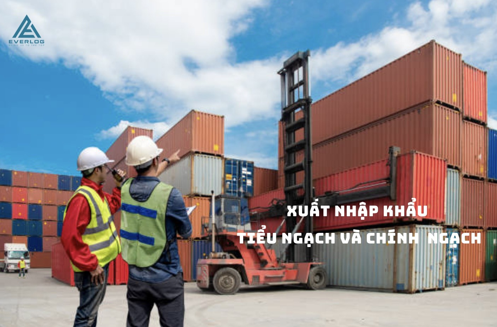

Kiến thức nền tảng
Phân biệt Logistics và Supply Chain
Hiểu đúng phạm vi logistics trong toàn bộ chuỗi cung ứng để lựa chọn nhà cung cấp và mô hình vận hành phù hợp.
Đọc bài viết →Nội dung theo bốn cụm: vận chuyển quốc tế, hải quan, giấy phép và quản trị chi phí.
Hiểu đúng phạm vi logistics trong toàn bộ chuỗi cung ứng để lựa chọn nhà cung cấp và mô hình vận hành phù hợp.
Đọc bài viết →
Xuất nhập khẩuNhững điểm doanh nghiệp cần cân nhắc khi lựa chọn phương thức giao thương.
Đọc tiếp →Đường biểnSo sánh chi phí, thời gian và mức độ kiểm soát hàng hóa.
Đọc tiếp → Hải quan
Hải quanNhững tài liệu và thông tin nên được rà soát sớm.
Đọc tiếp → Case study
Case studyKhảo sát tuyến, phương tiện, chằng buộc và phương án an toàn.
Đọc tiếp →